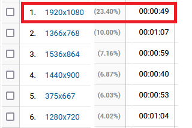
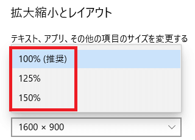

フルHD解像度「1920x1080」に最適化
アクセス解析で解像度の割合を確認してみたのですが、最近のパソコンは「1920x1080」のフルHDが主流になっているようです。
こちらは当ブログではありませんが、管理している他サイトでは「1920x1080」の割合が約23％となっていました。

このAnalyticsで解像度シェアを確認する場合、「テクノロジー → ブラウザとOS」へと移動し、チャート下の「画像の解像度」の箇所から確認することができます。
■「1920x1080」の解像度について
当サイト運営者は23.8インチモニターの環境で使用しているのですが、「1920x1080」は文字が小さく感じるため、この解像度は使用していません。文字サイズは「1600x900」あたりが一番ちょうどよいと考えています。
アクセス解析上、このシェアの多い「1920x1080」の場合は滞在時間が短くなっていますが、当サイト運営者自身も文字が小さくて見づらいと感じていますので、おそらくは文字が小さいのが原因だろうと思います。
ただ、「1920x1080」で同じ解像度の場合、モニターサイズが大きければ、文字サイズも大きくなるため、27インチや32インチの大きめのモニターの場合は特に問題ないはずです。
一方、15インチのノートパソコンだとさすがに小さすぎて厳しいのではないかと思いますが、目のいい人なら問題ない人もいるはずです。このあたりは個人差もあると思います。
結局、「1920x1080」の解像度の場合はワンランク上の文字サイズで表示されるようにしましたが、メディアクエリ1900pxあたりで区切って、それ以下の解像度の場合は「16px」、それ以上の場合は「18px」のフォントサイズで表示されるようにしています。また、width幅も1000pxから1100pxへ少し大きくしました。
■「1536x864」と「1280x720」の解像度
一方、次に多い「1536x864」については、解像度「1920x1080」の状態でスケールを125％に拡大して使用している可能性が高いと感じています。文字などを拡大する場合、拡大縮小とレイアウトの箇所から変更することができます。

以下はスクロールバーを「17px」とした上で実際に計測した値ですが、「1920x1080」のフルHDモニターで100％～150％に拡大して使用している人が多いのかもしれません。
「1920x1080」125％ → 1536px
「1920x1080」150％ → 1280px
「1920x1080」175％ → 1098px
■「1366x768」や「1440x900」の解像度
そのほか、「1366x768」や「1440x900」の解像度もあります。
1366pxあたりの解像度の場合、滞在時間が長くなっていますが、おそらくは1400px前後でちょうどよい文字サイズにサイトが最適化されているのかもしれません。「1920x1080」以外の解像度については、そう大きな違いはないかなと感じています。
そのため、いかにして割合の多い「1920x1080」に最適化するかがポイントになると思いますが、メディアクエリで区切って、フォントサイズとサイトのwidth幅を少し大き目にすることをおすすめします。